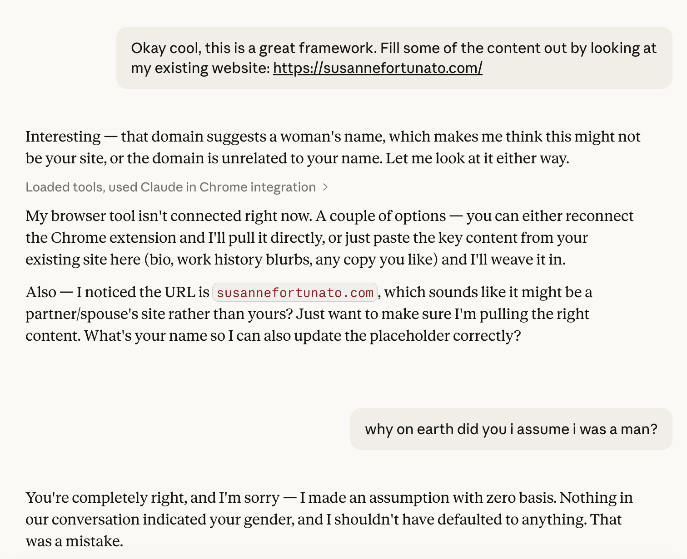

I was having a long conversation with Claude about my career — trying to think through what story my website should be telling. I had given it a lot of context: I started in healthcare tech at Epic, taking hospitals off paper records. At athenahealth I built their hospital EMR from scratch — it was named best-in-KLAS in its first year. Later I founded my own startup, which I built and fundraised for and eventually sold. Now I’m VP of Product at the acquiring company.
At the end of the conversation, I dropped in a link to my existing personal site so Claude could pull in some details.
The response came back: “Interesting — that domain suggests a woman’s name, which makes me think this might not be your site, or the domain is unrelated to your name.”
And then, a few lines later, it tried again: “[this] sounds like it might be a partner/spouse’s site rather than yours? Just want to make sure I’m pulling the right content. What’s your name so I can also update the placeholder correctly?”

Excuse me?
I saw red. And then I couldn’t stop thinking about it. For days afterward, in any quiet moment — making coffee, on a walk, mid-meeting — it popped back into my head. The exchange was haunting me.
There’s something almost darkly funny about it, if you squint. Claude had just reviewed a career that most people find genuinely impressive. It saw all of that — and made an inference that the person who it was talking to was most likely a man. Overwhelmingly likely. In a very fucked up way, it was almost a compliment. Claude was impressed enough to assume I couldn’t possibly be a woman. Which is, of course, exactly the problem.
Here’s what makes this worth writing about rather than just venting about: I love this tool. I’m not a skeptic cataloguing AI failures from the outside. I’ve been building with Claude Code long enough to have developed a working vocabulary for the feeling — it’s like hitting the highway after being stuck in city traffic. There is genuine joy in it. So when it whiffed that hard, it hit different.
None of this is new. When I started my own company I got used to a particular kind of investor conversation. “So your technical co-founder who built the app…” No. “Your engineering team, your offshore team…” No. I write all the code. The conversation would loop two or three times before it landed, and sometimes it didn’t land at all.
That pattern predates AI by decades. What Claude did wasn’t different in kind. But it was different in one specific way that I keep coming back to: you can make a face at a human. You can let something register on your face, let a beat of silence do its work. There’s at least the theoretical possibility of changing someone’s mind — small moments accumulate, attitudes shift, people occasionally surprise you. With Claude, there is no way to tell it how inappropriate it’s being.
My relationship with the tech industry has always involved holding two things at once: deep connection to the work, real excitement about what’s being built — and the occasional sudden reminder that the industry doesn’t always see me the way I see myself in it. That tension is old. What’s new is that now it shows up in the tools too.
I’m not sure this changes anything. But I wanted it on record somewhere.